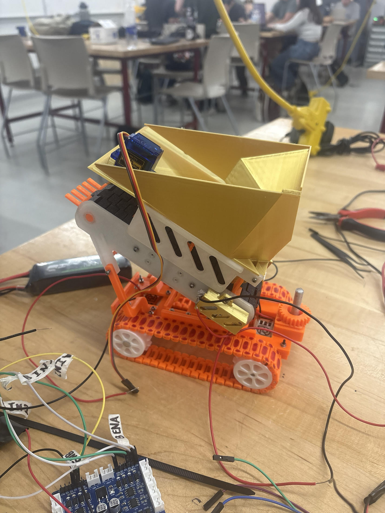
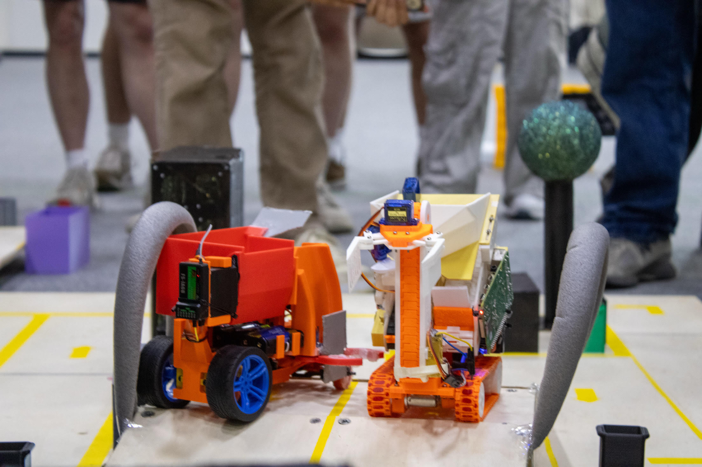
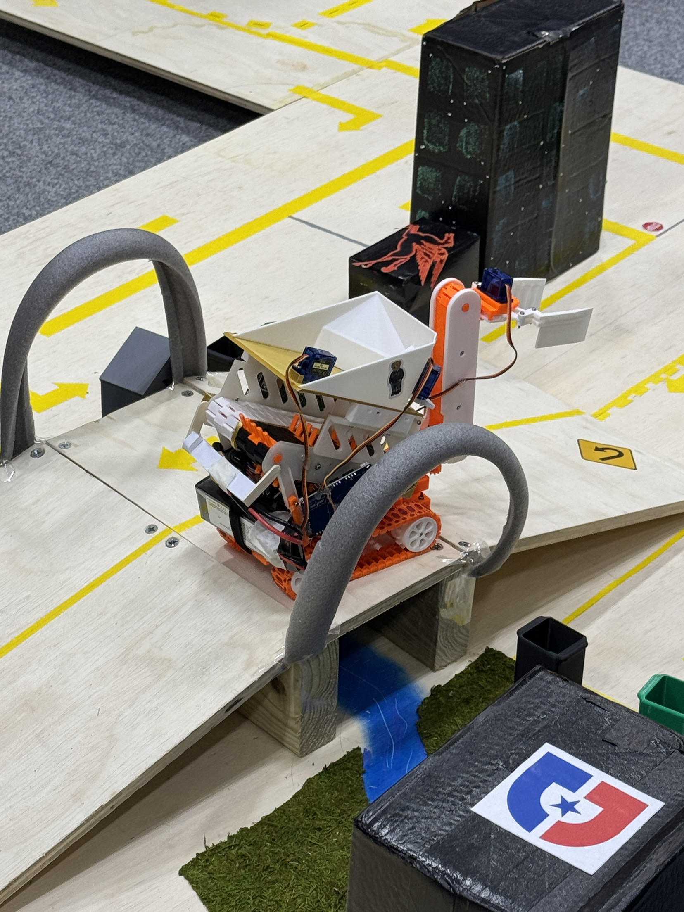
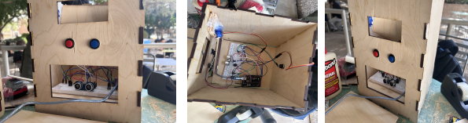
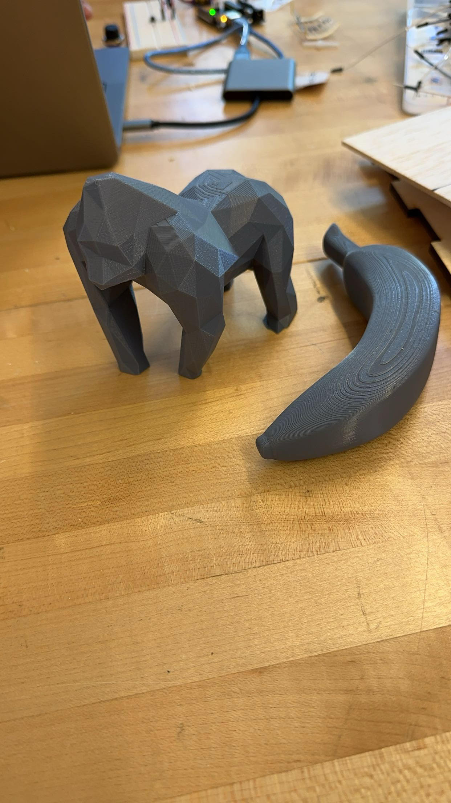
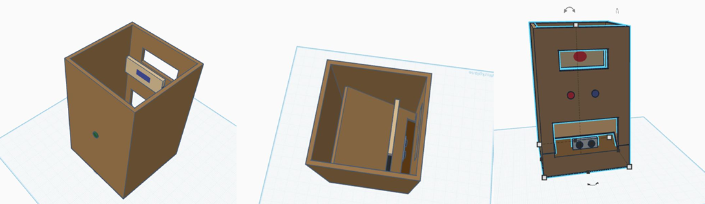

Arizona State University — Ira A. Fulton Schools of Engineering, Tempe, AZ
B.S. Mechanical Engineering · GPA 3.6/4.0 · Expected May 2028 · Chandler, AZ
Solutions Engineer Intern
A scoring system that turns raw campaign data into a single Green/Yellow/Red health rating per client, so account managers can spot at-risk accounts before a client does. Pulls live metrics from TapClicks and delivery data from Asana into one composite score.
A fully autonomous weekly newsletter for East Valley Arizona (Gilbert, Chandler, Queen Creek, San Tan Valley) that researches, writes, and publishes itself — no human in the loop once it's scheduled.
Client reporting used to mean pulling numbers by hand from multiple platforms after every campaign. This app automates that: it pulls from internal databases and the external email marketing platforms REV77 runs campaigns on, then generates, stores, and lets the team browse finished reports from one dashboard.
A personal NFL fantasy football analytics dashboard, built to give myself an edge in drafting and weekly lineup decisions — and to teach myself web development from a standing start of zero, coming from a Python/MATLAB background. Rebuilt from an early Streamlit prototype into a full Dash application.
Designed and modeled the physical competition environment — a makeshift city navigated by an autonomous robot to collect simulated trash units — placing 1st among competing university teams in a timed head-to-head competition.



A 3D-printed and hand-crafted small-scale orangutan habitat with an autonomous, interactive attraction, built with a 4-member team.



Selected mechanical engineering coursework that overlaps with the computational and analytical work above.
RK4 and Euler methods (explicit/implicit), Heun's method, finite difference PDE schemes for heat and advection, Fourier analysis and DFT concepts.
Rolling constraints, instantaneous centers, and relative velocity equations for rigid body systems.
Materials science fundamentals including the Griffith crack model, Rule of Mixtures for composites, and bonding theory.